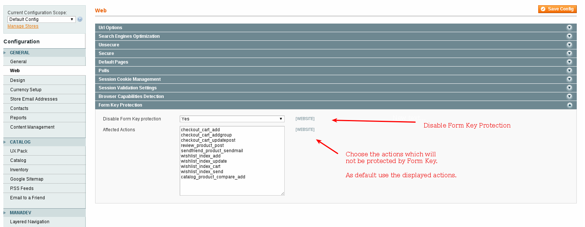

Module Artio_Form key disables "form key" protection introduced to Magento CE 1.8. Form key protection prevent XSS attacks, but also broken all modules that provide full page caching (FPC).
If you are using M-Turbo module on Magento CE 1.8 or higher you should disable "form key" protection by this module. M-Turbo on Magento 1.8 or higher with "form key" makes strange behaviour (customers cannot login, cannot add a product to cart etc.)
Merge directory 'app' from this package with directory 'app' in your Magento and refresh Magento Cache (System/Cache Management in your Magento backend)
Go to System/Configuration in your Magento backend and setup the module by follow screenshot.
